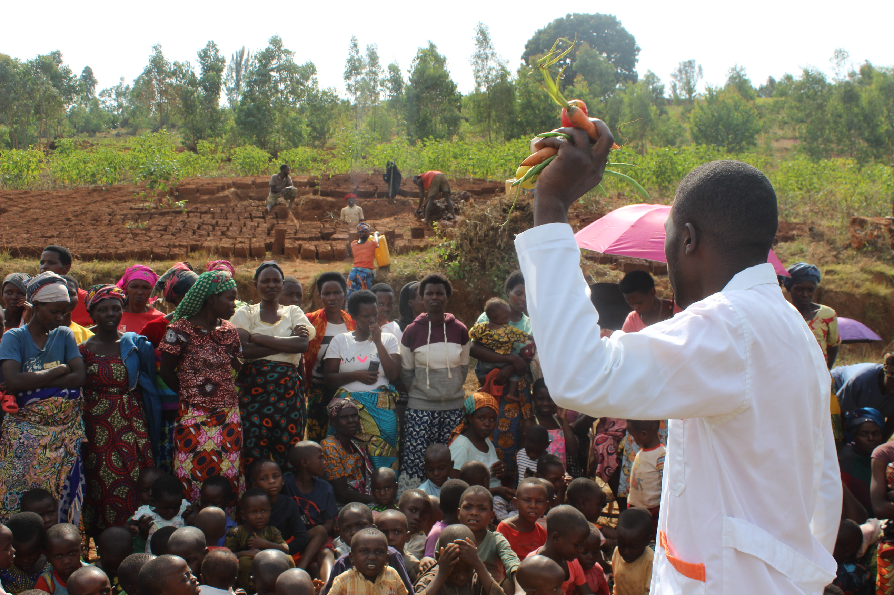

Huye Community Outreach
URPHSA has organized 1 day awareness campaign which will promote community heath through multiscteral approaches including community nutrition action, water, hygiene and sanitation (wash) and social security issues
Our outreach is intended to raise awareness about the importance of proper nutrition for good health .it’s a public health initiative to help people learn about making informed food choices and developing healthful eating and physical activity habits. With the theme of putting “emphasis on eating with sustainability in mind”. Malnutrition is a challenge to be addressed with high priority; the government has set targets to reduce malnutrition and stunting to less than 19 percent by 2024.

BACKGROUND
Malnutrition is one of serious problem globally; world health organization statistics of 2016 Shows that one in four infant between 6-23months has stunting which is equal to 21.9%. 155million under five years of age children are stunted, 39 million overweight or obese and 52 Million (6.9%) are wasted.
In Rwanda according to RDHS 2019-2020 under-five years aged children 33% are stunted, while underweight are 8% , 7.9% are overweight/obesity and 1% are wasted . The data about Infant and Young Child Feeding Practices (IYCF) show that only 22% of children aged 6-23 months were fed a minimum acceptable diet where minimum dietary diversity and minimum meal frequency are 34% and 46% respectively
Variation in children’s nutritional status by the district is quite evident, with stunting being highest in Ngororero District (51 percent) and the lowest in Rusizi and Karongi districts (with 31 and 32 percent respectively) Less than one percent of children under 5 years of age are wasted (too thin for their height) in West Province, The wasting prevalence is higher among children in Ngororero and Karongi districts (1.7 percent, each) than in other districts. Ngororero district is most affected with the problem of malnutrition and stunting in Rwanda.
Objectives
To increase awareness and health related information at the community through community nutrition action and WASH to prevent negative health impacts to maternal and child health to fight against all forms of malnutrition.
- specific Objectives were.
- Increase awareness on child feeding practices among community members.
- Increase awareness on continuity breastfeeding at 6 months especially minimum acceptable diet and how to make child pot (Agakono k’umwana) during complementary feeding of child after six (6) months
- Raise awareness on hygiene and sanitation practices
- Mobilize community to eliminate social norms that are barrier to complementary feeding.
EXPECTED OUTCOMES and Benefits
● Long term knowledge about benefits of exclusive breastfeeding before 6 months
● Increased knowledge on preparing complementary food
● Increased hygiene and sanitation
● Increased knowledge and skills on the importance of initiating breastfeeding friendly workplaces everywhere.
● Parents will get information on how to prepare a child pot
● Community will understand the concept of one egg per child every day